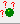

.
.
Overview User interface ↑ | ↓ • References
An MMM model contains more information than just structure data. MMM can be used like a laboratory notebook for exploring structure/function relationships. Observations made during work with the model and information retrieved from papers can be stored where they belong- with the chains, residues, or atoms concerned. This information can be retrieved by selecting this object or by keyword search. References can be stored together with their fulltext links.
This window is accessible only if a single object is selected (you can see that in the message board and by availability of the corresponding tool button .
A default annotation with two pages exists for any object. User annotations start at page 3, you can use as many pages as you wish. The current Page is displayed in the left upper corner of the window, it is not possible to directly input the page number. Instead, navigate with the < and > buttons.
Page 1 gives the MMM address of the selected object with a detailed description of what it means. The type of residue (three-character PDB code, which is the three-letter code for amino acids), the mass and the mean coordinates are also displayed. If the object is a whole structure, header information from the PDB file is also displayed and the number of atoms and residues is listed.
If DSSP secondary structure information is available, the first page of an residue lists the DSSP secondary structure assignment, the predicted water accessibility (ignoring water access blocking by cofactors), and the backbone dihedrals.
Page 2 contains a list of objects that are close to the selected objects (structural context). The distance to these objects (between mean coordinates) is also shown. A default context radius is used to generate this list, which is 3.5 Å for atoms, 8 Å for residues, and 40 Å for chains. Note that context with a non-default radius can be displayed in the message board via the corresponding tool button .
If DSSP secondary structure information is available, the second page of an residue alsolists hydrogen bonding partners and hydrogen bond energies.
Additional automatic annotation pages may exist, if there was special information in the PDB file or if a task performed in MMM has annotated the object.
Non-default annotations (pages 3 and higher) can be assigned privacy levels. That way you can share your model file without sharing all the (possibly insecure or still confidential) information you have stored with it. All information tagged Public is always stored, all information tagged group is stored only if you save your model for private use or exchange within your group, and all information tagged user is only stored when you save the model for private use.
Note that MMM saves by default in private mode, so that information is not unintentionally lost.
Keywords do not have individual privacy modes. It is the policy of MMM to save all keywords that are referred to by any object with a public annotation. If the model is saved for sharing with the group, additionally all keywords are saved that are referred to by any object with an annotation visible to the group. The same policy applies to references. In particular, references and keywords that are not used by any object are not stored when a files is saved for shring with the group or public, while they are stored if the project is saved in the normal way Save and Save as... items of the file menu.
The Keyword list displays all keywords that are currently defined in your model in alphabetical order. Note that all keywords starting with capital letters are found before all keywords starting with small letters. You can define a new keyword using the New button for the Keywords field. Defining a new keyword automatically adds it to the Keywords field of the current object.
To add or remove a keyword from the Keywords field of the current object, select it in the Keyword list and click the + or - button.
Keywords are assigned to the object, not to an individual annotation page. If you want to remember to which annotation the keyword belongs, mention it in the Annotation text edit field.
The following annotations are automatically generated by MMM:
Automatic annotations start with an asterisk * in the first line immediately followed by a keyword. The first line should not be edited, as otherwise MMM cannot amend the annotation if further annotations of the same type are made (they will then end up on extra pages).
The Reference list displays all references that are currently defined in your model in alphabetical order of their short names. Note that all short names starting with capital letters are listed before all short names starting with small letters. You can add new references to the model by using the New button for the References field. Adding references automatically adds the current citation in the Reference window to the References field of the current object.
To add or remove a citation from the References field of the current object, select it in the Reference list and click the + or - button.
References are assigned to the object, not to an individual annotation page. If you want to remember to which annotation the reference belongs, mention it in the Annotation text edit field.